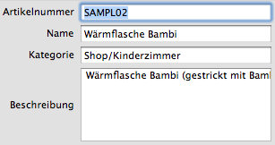
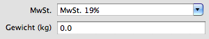
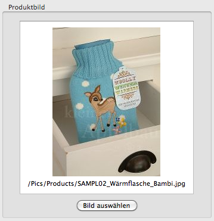

Legt das Erscheinungsbild des Produkteditors fest. Einige Felder könne ausgeblendet werden, um die Übersichtlichkeit zu erhöhen.
Falls keine Artikelnummern vergeben werden, die Produkte nur über den Namen identifiziert werden, kann das Feld 'Artikelnummer' ausgeblendet werden.
Falls zum Produkt nebem dem Namen keine weitere Beschreibung notwendig ist, kann das Feld 'Beschreibung' ausgeblendet werden.
Es ist möglich, den Preis sowohl als Nett, als auch als Bruttowert darstellen zu lassen.

Hier kann angegeben werden, ob Staffelpreise benutzt werden sollen. Wenn ja, wie viele Preisstaffelungen benutzt werden sollen.

Falls die Produkte immer mit dem gleichen, dem Standardsteuersatz ausgezeichnet werden, kann das Feld 'Mehrwertsteuer' ausgeblendet werden.
Falls die Produkte ohne Gewichtsangabe angelegt werden, kann das Feld 'Gewicht' ausgeblendet werden.
Falls die Produkte ohne Produktbild angelegt werden, kann das Feld 'Produktbild' ausgeblendet werden.
